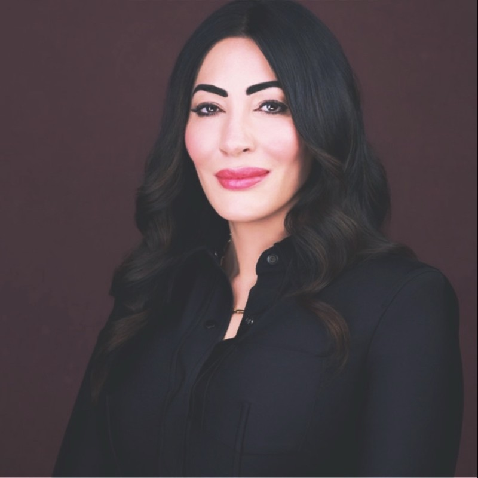
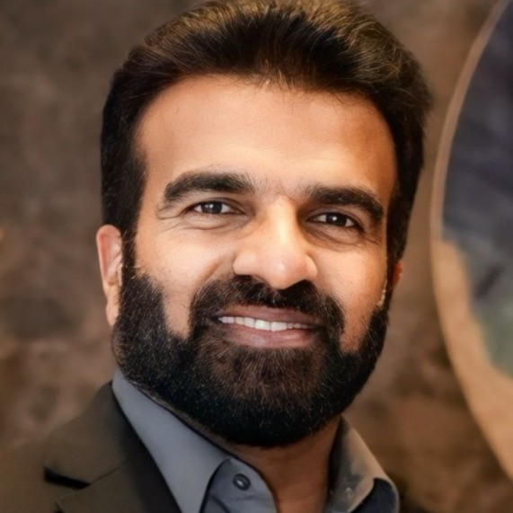

25 years of proven delivery experience across technology services, enterprise account leadership, and business operations. One of BayOne's founding team members, instrumental in scaling the company to $80M+ revenue. Built and leads Fortune 500 account relationships across technology, retail, and industrial sectors. Deep knowledge of MGRC's business, stakeholders, and NextGen transformation. Founded #MakeTechPurple, placing 500+ women in tech careers and improving hiring rates from 26% to 46%. San Jose State University.
Enterprise account leader with deep expertise in building trust-based partnerships with C-level stakeholders. Cultivated strong personal relationships with MGRC's senior IT leadership over multiple years, providing unique insight into organizational priorities and decision-making. Day-to-day relationship bridge between BayOne delivery and MGRC stakeholders. UC Irvine.

Proven technology executive with a track record of building and scaling global services organizations. Previously CEO of Intelliswift Software; CTO & President at UST Global; Practice Head at Cognizant; Regional Director, North America at TCS. Harvard Executive Leadership Development Program. Provides executive sponsorship and C-suite escalation access with personal commitment to the MGRC partnership.
Seasoned delivery executive across global technology enterprises. Previously Senior Regional Director at HCL Technologies leading 70+ professionals in IT application support; Senior Manager, Client Services at Infosys (Supply Chain Ops, Finance); Service Delivery Manager at Zensar Technologies for a $25M+ IT Ops portfolio. Based at BayOne's Pleasanton office. BITS Pilani. BayOne's delivery escalation point for MGRC.